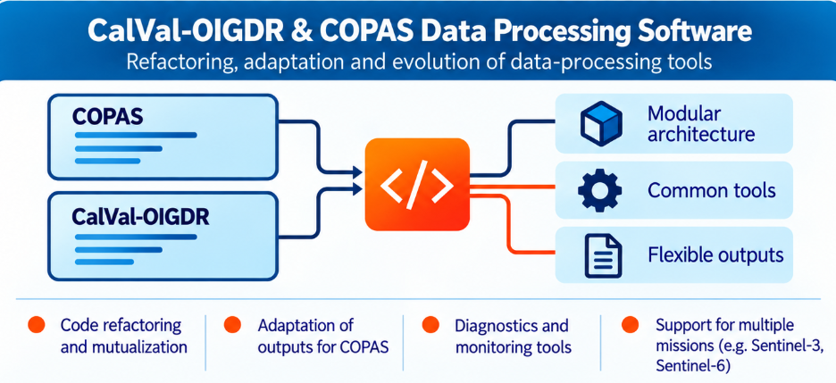
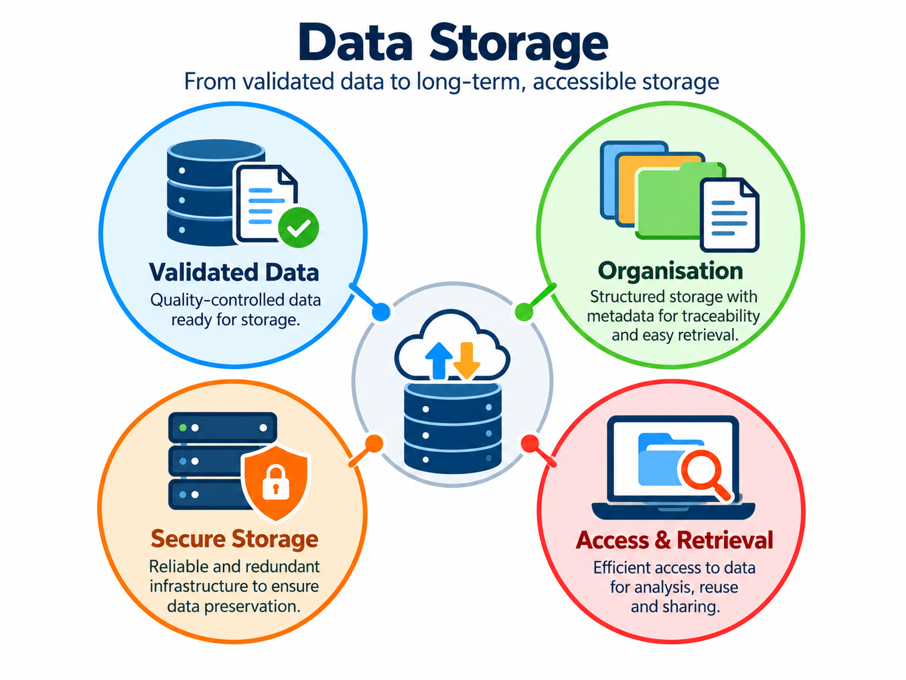
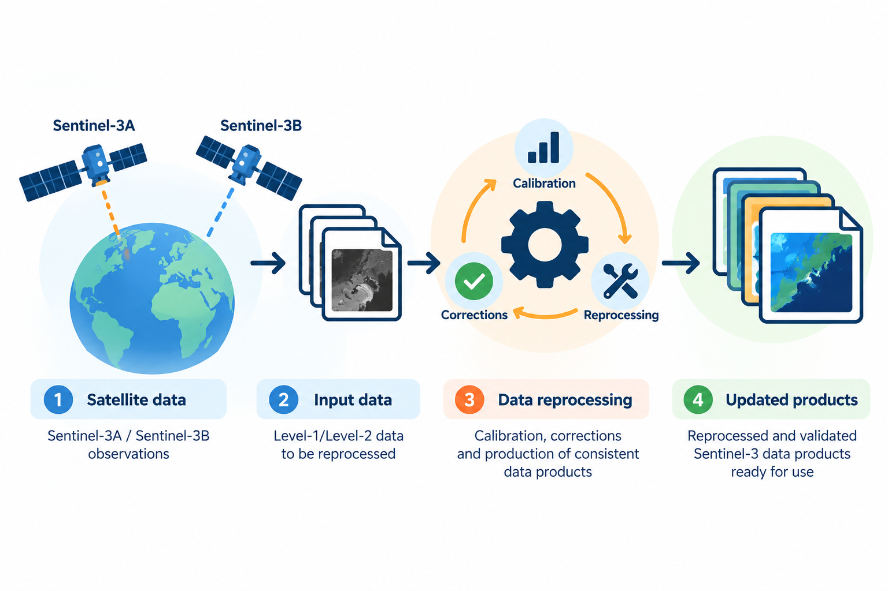

Altimetry Data Systems & Operations
Scientific-software engineering and operational data work covering modular validation and mission reporting, automated data archiving, and Sentinel-3A / Sentinel-3B reprocessing and operational monitoring.
In parallel with scientific analysis activities, I work on the software and operational infrastructure required to make satellite-altimetry processing more maintainable, traceable and reliable.
This work is organized around three complementary areas: modularization and evolution of operational validation software, automation of the data-archiving lifecycle, and Sentinel-3A / Sentinel-3B reprocessing and completeness monitoring.
Modular validation software & unified mission reporting
A major part of this work focused on evolving CalVal-OIGDR, an operational system used for the daily validation and reporting of Level-2 altimetry products. The existing software was refactored into a more modular and maintainable architecture, with clearer separation between processing, validation and reporting components.

The reporting capabilities were also extended and harmonized to cover missions and information previously handled through COPAS, an operational mission-reporting system. The objective was to preserve mission-specific requirements while providing a more reusable and consistent framework for operational validation and reporting.
Main contributions
- Refactoring and modularization of the CalVal-OIGDR reporting software.
- Extension of mission-specific reporting capabilities.
- Harmonization of reporting between CalVal-OIGDR and COPAS workflows.
- Improved diagnostics and operational monitoring.
Automated data archiving
I also worked on an automated archiving chain designed to secure the lifecycle of scientific datasets from local storage to S3 / Scality object storage.

The workflow detects new data incrementally, transfers the relevant files, verifies remote integrity using file size and SHA256 checks, and prepares controlled purge manifests. Local files are removed only after the archived copy has been validated, respecting a retention period.
The same organization improves traceability and makes the archive easier to maintain and restore, while reducing manual handling of large data volumes.
Workflow
- Detection of new or not-yet-archived datasets.
- Transfer to S3 / Scality storage.
- Integrity verification using metadata and SHA256 checks.
- Manifest generation and validation before deletion.
- Controlled cleanup of validated local copies.
- Traceable logs and restore support.
Sentinel-3A / Sentinel-3B processing and validation
Another workstream focuses on Sentinel-3A and Sentinel-3B altimetry processing, with particular attention to data completeness, missing tracks and configuration consistency.

Before reprocessing, temporal continuity checks were performed to identify gaps in the input data. Short gaps below a defined threshold were corrected when appropriate, helping ensure consistent temporal coverage before launching the production workflow.
The reprocessing covers more than eight years of Sentinel-3A and Sentinel-3B data and is executed through large-scale batch workflows scheduled with SLURM. Processing results are analyzed year by year, cycle by cycle and pass by pass to identify missing or incomplete records.
Field availability and geographical coverage are used to detect remaining gaps and compare them with previously known anomalies. The work also includes configuration updates and harmonization between Sentinel-3A and Sentinel-3B processing chains, together with reprocessing and table updates when missing or inconsistent data are identified.
Main objectives
- Check temporal continuity and correct short data gaps before reprocessing.
- Identify missing cycle/pass combinations and incomplete tracks.
- Monitor completeness across more than eight years of Sentinel-3 data.
- Support large-scale reprocessing through SLURM batch workflows.
- Compare detected gaps with existing reference inventories.
- Support configuration and table updates when required.
Reliable and maintainable scientific data systems
Although these activities address different parts of the operational chain, they share the same engineering objective: reduce duplicated logic, improve traceability, automate repetitive operations and make scientific data products easier to validate, maintain and reuse.